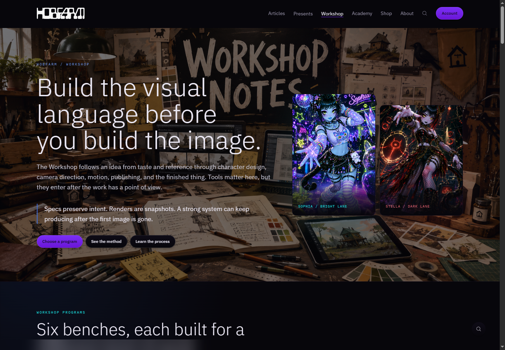
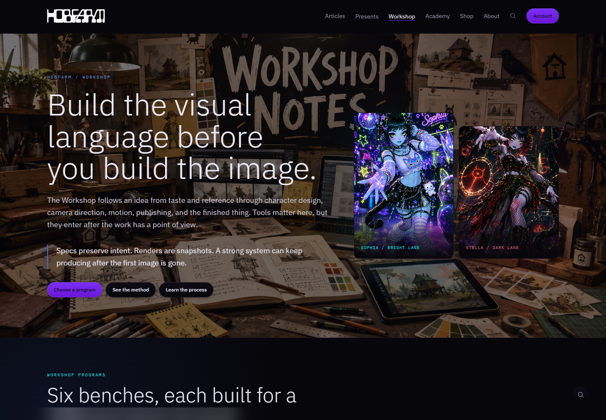
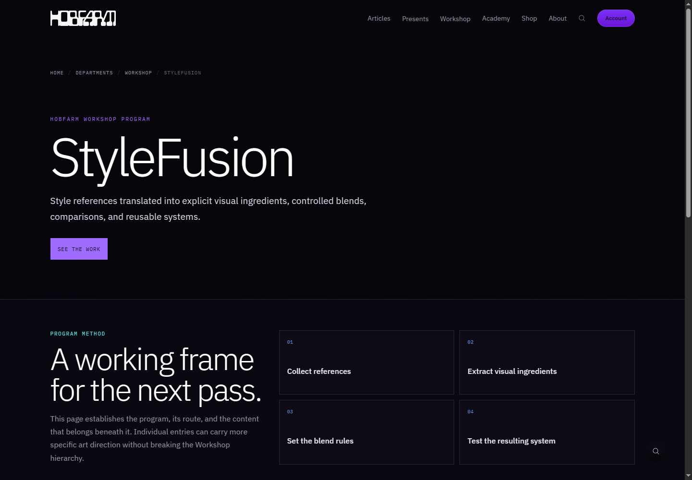
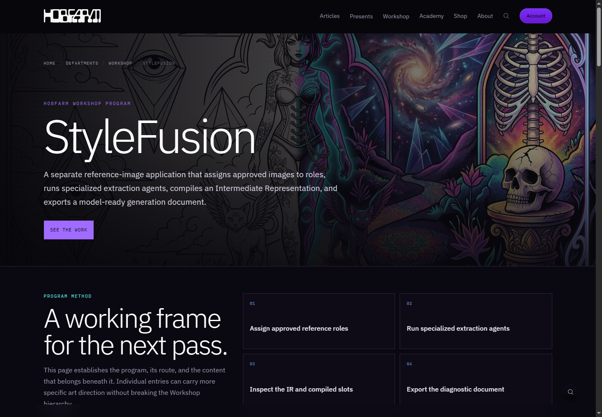

HobFarm Workshop / design QA comparison
Workshop landing / 1440 × 1000

Production reference / before

Local production build / after
StyleFusion program / 1440 × 1000

Production reference / before

Local production build / after